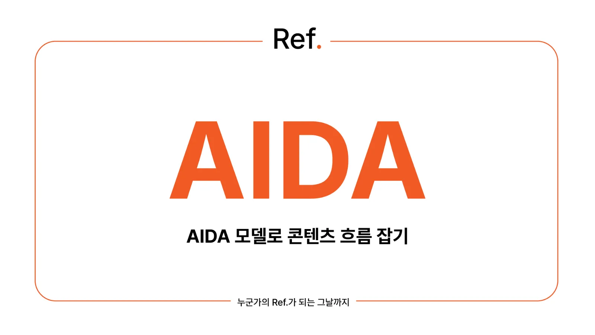
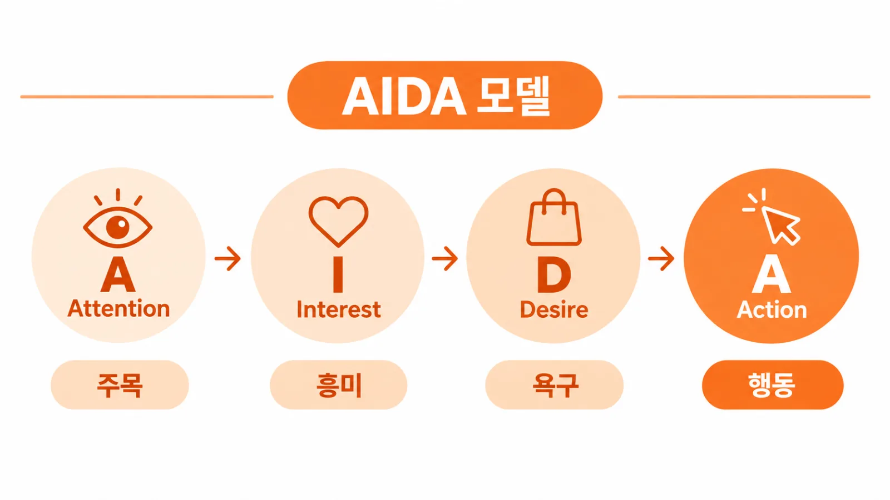
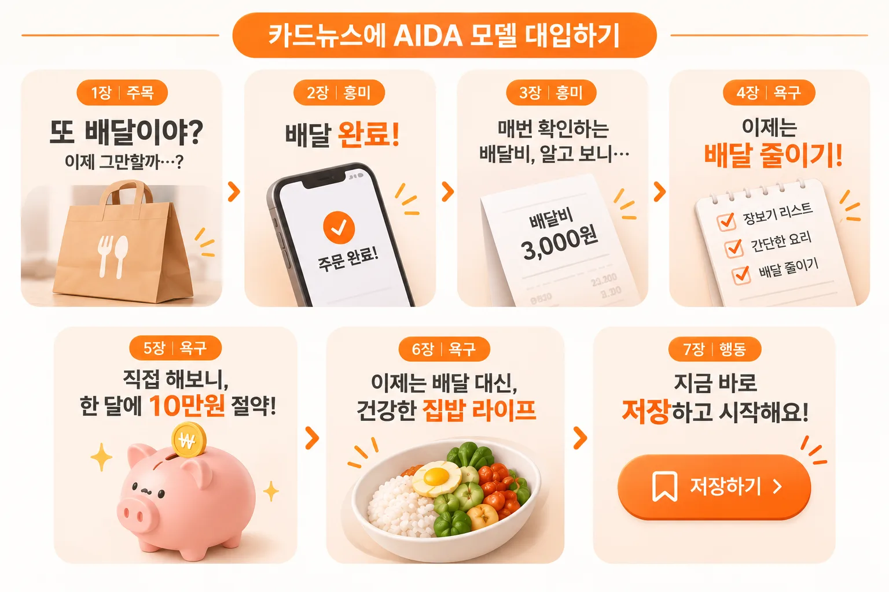
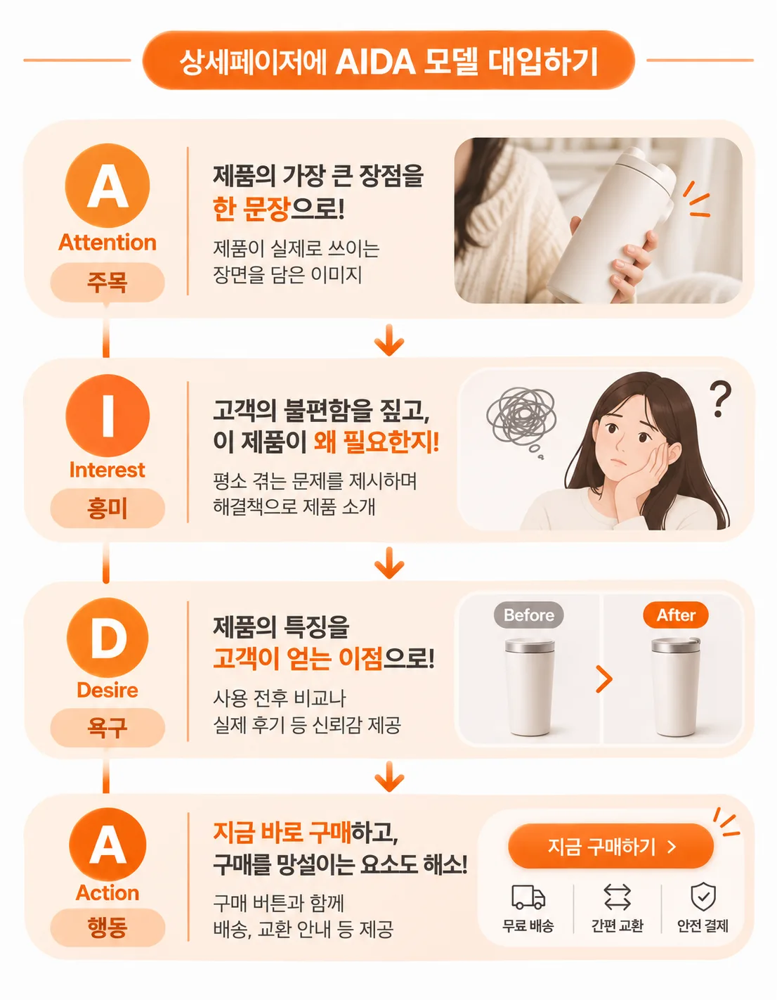
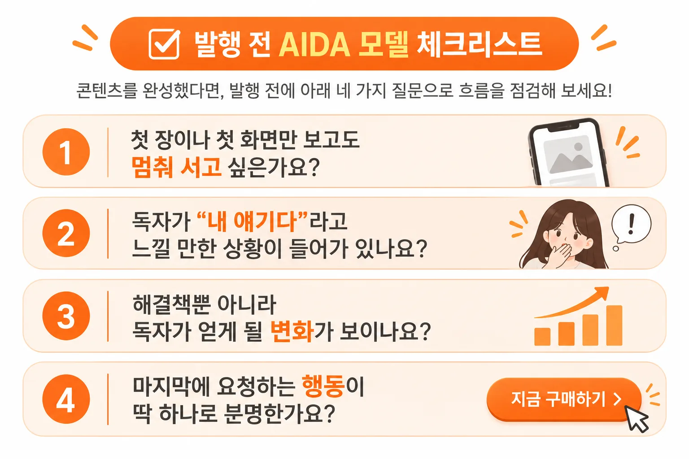

AIDA 모델로 콘텐츠 흐름 잡기

기획은 했는데
콘텐츠 기획안을 쓰고 다시 읽어보면 필요한 정보는 다 넣었는데 읽는 사람이 중간에 지루해하는 경우가 있어요. 자료 조사도 충분히 했고 문장도 다듬었는데, 막상 다른 사람에게 보여 주면 "그래서 뭘 하라는 거야?"라는 반응이 돌아오기도 하죠.
이럴 때는 대부분 내용이 아니라 순서의 문제입니다. 독자는 처음부터 정보를 받아들일 준비가 되어 있지 않아요. 먼저 눈길이 가야 하고, 그다음 궁금해져야 하고, 그 뒤에야 갖고 싶거나 해 보고 싶은 마음이 생깁니다. 이 순서를 무시하고 정보만 나열하면 아무리 좋은 내용도 설득력이 떨어져요.
그래서 기획안이나 콘텐츠의 뼈대를 세울 때는 "무엇을 말할까"보다 "어떤 순서로 말할까"를 먼저 고민하는 게 좋아요. 이럴 때 꺼내 쓰기 좋은 틀이 바로 AIDA 모델입니다.
AIDA 모델의 4단계

AIDA 모델은 Attention(주목), Interest(흥미), Desire(욕구), Action(행동)의 앞 글자를 딴 말이에요. 소비자가 광고를 보고 실제로 행동하기까지 거치는 마음의 단계를 순서대로 정리한 공식입니다. 19세기 말 광고 실무에서 유래한 것으로 알려진 오래된 이론이지만, 지금도 카피라이팅과 콘텐츠 기획의 기본 틀로도 쓰입니다.
각 단계가 하는 일을 간단히 정리하면 다음과 같습니다.
- Attention(주목): 수많은 콘텐츠 사이에서 독자의 시선을 멈추게 하는 단계예요. 강한 문구, 낯선 질문, 눈에 띄는 비주얼이 여기에 해당합니다.
- Interest(흥미): 멈춘 독자가 계속 읽고 싶게 만드는 단계예요. 독자의 고민이나 상황을 짚어 주면 "내 얘기네" 하고 다음 내용으로 넘어갑니다.
3. Desire(욕구): 해결책과 그로 인한 변화를 보여 주며 "나도 해 보고 싶다"는 마음을 만드는 단계예요. 기능보다 독자가 얻게 될 결과를 보여 주는 게 핵심입니다. 4. Action(행동): 마음이 움직인 독자에게 구체적인 행동을 요청하는 단계예요. 저장, 댓글, 구매, 신청처럼 할 일을 분명하게 알려 줘야 합니다.
단계가 단순해서 카드뉴스, 상세페이지, 광고 카피, 발표 자료처럼 어떤 형식에도 대입하기 쉽다는 것이 가장 큰 장점이에요.
카드뉴스에 AIDA 모델 대입하기
카드뉴스는 한 장씩 넘겨 보는 형식이라 AIDA 모델을 적용하기 특히 좋아요. 7장 구성을 기준으로 나눠 보면 다음과 같습니다.
1장은 주목 단계로, 후킹 문구와 강한 비주얼로 스크롤을 멈추게 해요. 이 장에서 설명을 길게 하기보다 질문이나 숫자, 반전 있는 한 문장으로 호기심을 만드는 데 집중하세요.
2~3장은 흥미 단계로, 독자의 고민을 짚어 "내 얘기다"라고 느끼게 만듭니다. 예를 들어 자취생 식비 절약 카드뉴스라면 "배달 앱을 끊겠다고 다짐했는데 또 주문했다면" 같은 상황을 먼저 보여 주는 식이에요.
4~6장은 욕구 단계로, 해결 방법과 얻게 될 변화를 보여 줘요. 방법만 나열하기보다 이 방법을 따라 했을 때 독자의 하루가 어떻게 달라지는지 그려 주면 설득력이 커집니다.
마지막 장은 행동 단계로, 저장이나 댓글처럼 원하는 행동 하나를 분명히 제시합니다.

상세페이지에 AIDA 모델 대입하기
상세페이지는 위에서 아래로 길게 내려가는 형식이라, AIDA 모델을 스크롤 순서에 맞춰 배치하면 흐름을 잡기 쉬워요.
맨 위 첫 화면은 주목 단계입니다. 제품의 가장 큰 장점을 한 문장으로 보여 주고, 제품이 실제로 쓰이는 장면을 담은 이미지를 배치해요. 바로 아래는 흥미 단계로, 고객이 평소 겪는 불편함을 짚어 주며 "이 제품이 왜 필요한지"를 먼저 이야기합니다.
중간 부분은 욕구 단계예요. 제품의 특징을 고객이 얻는 이점으로 바꿔 설명하고, 사용 전후 비교나 실제 후기처럼 믿을 만한 근거를 보여 줍니다. 이때 근거 없는 수치나 과장된 표현은 오히려 신뢰를 떨어뜨리니 주의하세요.
마지막 하단은 행동 단계로, 구매 버튼과 함께 배송이나 교환 안내처럼 구매를 망설이게 하는 요소를 정리해 줍니다. 카드뉴스와 형식은 달라도 독자의 마음이 움직이는 순서는 같다는 점을 기억하면 돼요.

마지막 A에서 자주 하는 실수
구매하기 버튼 하나만 크게 놓인 모바일 화면 목업, 하나의 행동만 요청하는 예시
가장 흔한 실수는 행동을 여러 개 요구하는 거예요. 저장도 하고, 댓글도 달고, 프로필 링크도 눌러 달라고 하면 독자는 무엇을 먼저 해야 할지 몰라 결국 아무것도 하지 않게 됩니다.
두 번째로 흔한 실수는 행동 단계를 아예 빼먹는 거예요. 앞에서 공들여 흥미와 욕구를 만들어 놓고 마지막에 아무 요청도 하지 않으면, 독자는 고개를 끄덕이고 그냥 지나갑니다. 콘텐츠 하나에는 원하는 행동 하나만 정하고, 그 행동을 마지막에 분명하게 적어 주세요.
AIDA 모델을 적용할 때는 기획 단계에서 "이 콘텐츠의 마지막 A는 무엇인가"를 먼저 정해 두면 좋아요. 도착점이 정해지면 그곳까지 가기 위해 어떤 관심과 욕구를 만들어야 하는지 거꾸로 설계할 수 있어서 앞 단계의 흐름도 자연스럽게 잡힙니다.
발행 전 AIDA 모델 체크리스트
콘텐츠를 완성했다면 발행 전에 아래 네 가지 질문으로 흐름을 점검해 보세요.
- 첫 장이나 첫 화면만 보고도 멈춰 서고 싶은가요?
- 독자가 "내 얘기다"라고 느낄 만한 상황이 들어가 있나요?
- 해결책뿐 아니라 독자가 얻게 될 변화가 보이나요?
- 마지막에 요청하는 행동이 딱 하나로 분명한가요?

네 질문 중 하나라도 답이 애매하다면 그 단계를 보강하는 것만으로도 콘텐츠의 완성도가 눈에 띄게 달라져요.
멈추고, 끌리고, 원하고, 움직이는 순서만 지켜도 콘텐츠 흐름이 훨씬 매끄러워져요. 다음 기획안에 AIDA 모델을 대입해 보고, 네 단계 중 어느 단계가 가장 어려웠는지 댓글로 알려 주세요.